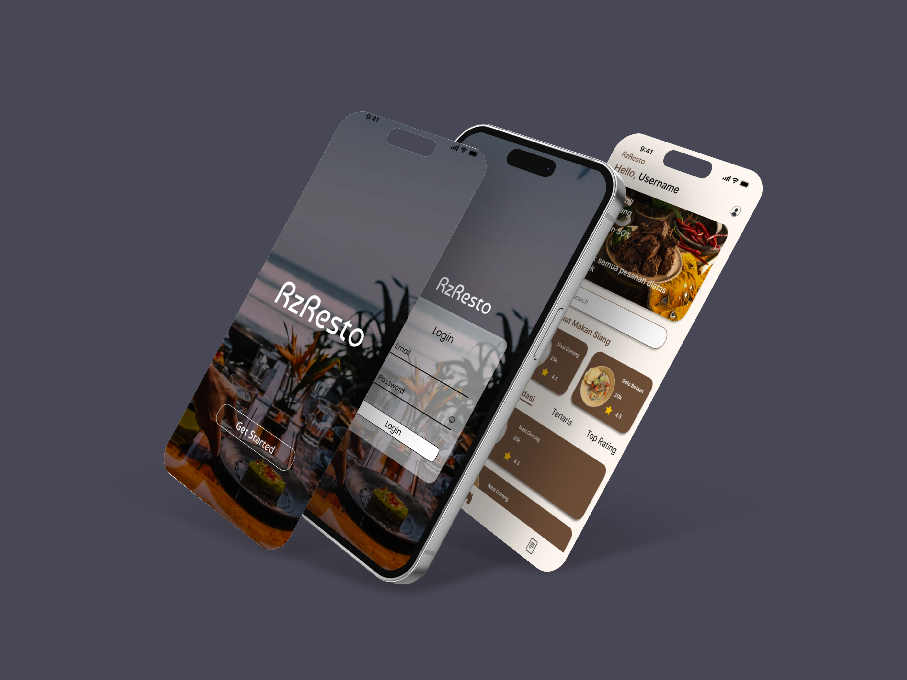

01 / Featured • UI/UX
Figma Prototype
Online Food App (RzResto)
Interactive mobile restaurant ordering system designed in Figma. Complete user flows, categorized food browsing, checkout flows, and accessible culinary layout.
Figma
Wireframing
Design System